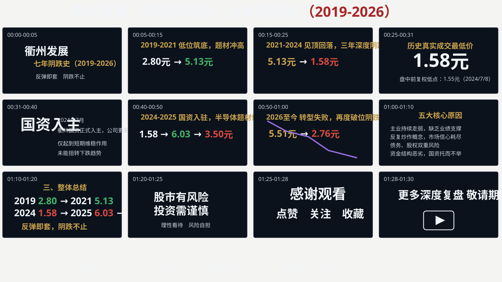
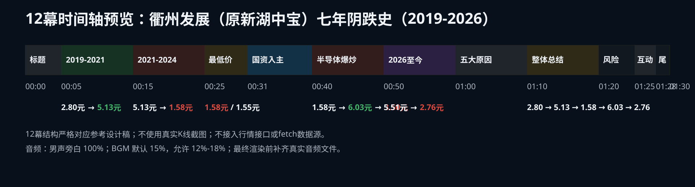

衢州发展（原新湖中宝）七年阴跌史（2019-2026）
12幕静态预览，用于审核场景、时间轴、字幕和旁白一致性。不依赖 HyperFrames CLI，不自动打开浏览器，不渲染 MP4。
12宫格场景预览

时间轴预览

12幕时间轴对照
| 幕 | 时间 | 标题 / 内容 | 价格 |
|---|---|---|---|
| 1 | 00:00-00:05 | 标题开场：衢州发展（原新湖中宝）；七年阴跌史（2019-2026）；反弹即套 阴跌不止 | - |
| 2 | 00:05-00:15 | 2019-2021 低位筑底，题材冲高 | 2.80元 → 5.13元 |
| 3 | 00:15-00:25 | 2021-2024 见顶回落，三年深度阴跌 | 5.13元 → 1.58元 |
| 4 | 00:25-00:31 | 历史真实成交最低价；盘中前复权低点：1.55元（2024/7/8） | 1.58元 |
| 5 | 00:31-00:40 | 国资入主：2024年7月 衢州国资正式入主，公司更名；仅起到短期维稳作用，未能扭转下跌趋势 | - |
| 6 | 00:40-00:50 | 2024-2025 国资入驻，半导体题材爆炒 | 1.58元 → 6.03元 → 3.50元 |
| 7 | 00:50-01:00 | 2026至今 转型失败，再度破位阴跌 | 5.51元 → 2.76元 |
| 8 | 01:00-01:10 | 五大核心原因 | - |
| 9 | 01:10-01:20 | 三、整体总结：价格链逐个高亮，突出“反弹即套，阴跌不止” | 2019年 2.80元 → 2021年 5.13元 → 2024年 1.58元 → 2025年 6.03元 → 2026年 2.76元 |
| 10 | 01:20-01:25 | 股市有风险 投资需谨慎；理性看待 风险自担 | - |
| 11 | 01:25-01:28 | 感谢观看；点赞 关注 收藏 | - |
| 12 | 01:28-01:30 | 更多深度复盘 敬请期待 | - |
本地文件入口
| 用途 | 文件 |
|---|---|
| HyperFrames 主合成 | index.html |
| 中文字幕 | subtitles.srt |
| 旁白稿 | narration.zh-CN.txt |
| 时间轴文档 | docs/timeline.md |
| 音频方案 | docs/audio-plan.md |
| 渲染前清单 | docs/final-render-checklist.md |
最终音频占位
| 轨道 | 目标文件 | 建议音量 | 淡入淡出 |
|---|---|---|---|
| 男声旁白 | assets/audio/voiceover.zh-CN.male.wav | 100% | 随旁白自然起止 |
| 背景音乐 | assets/audio/bgm.cinematic.mp3 | 12%-18%，当前预留 15% | 开头 1 秒淡入，结尾 2 秒淡出 |
当前不伪造音频文件；文件缺失状态见 docs/preview-status.md。